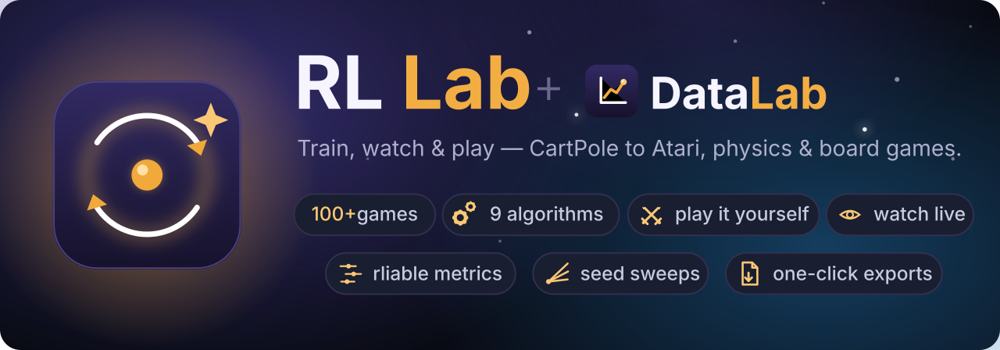
A full-stack reinforcement-learning workbench: a Python/FastAPI training backend and a React 19 front-end wired together over WebSocket, putting 109 environments and 9 algorithms behind one live dashboard. Built solo in ~4 weeks, AI-assisted with Claude Code.
Nine algorithms across 100+ environments — a sample of what comes out the other end.
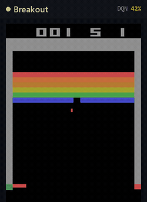
Breakout · DQN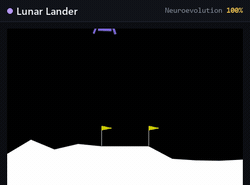
Lunar Lander · Neuroevolution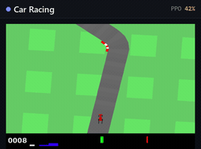
Car Racing · PPO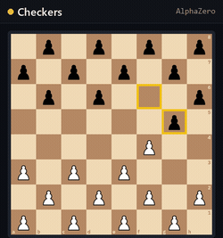
Checkers · AlphaZero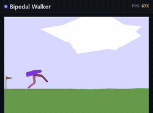
Bipedal Walker · PPO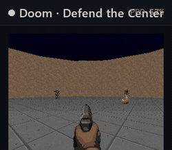
Doom: Defend the Center · PPO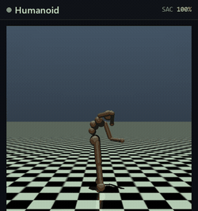
Humanoid · SAC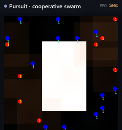
Pursuit · multi-agent PPO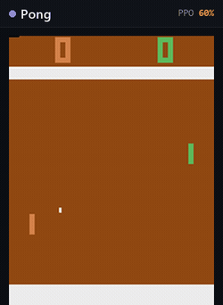
Pong · PPOAtari is optional by design. The
Atari backend (ale-py) is GPL-licensed and bundles copyrighted ROMs, so it is
deliberately not a hard dependency — it's an opt-in install (pip install ale-py),
keeping the core AGPL-clean and free of third-party ROMs. Bring your own and the 64 Atari
environments light up; skip it and ~45 run out of the box.
Local-first and single-user: the whole thing runs on your own machine, so training uses your own compute. The training loop and the visual preview are decoupled — the network never blocks learning, and the UI stays live at 60 fps while a model trains.
FastAPI — REST + WebSocket
PyTorch — training loop
Gymnasium env adapters (×9 families)
decoupled preview rollout
Data Lab — rliable-style stats
React 19 + Vite
live dashboard & charts
agent preview canvas
play-vs-agent controls
Data Lab comparison views
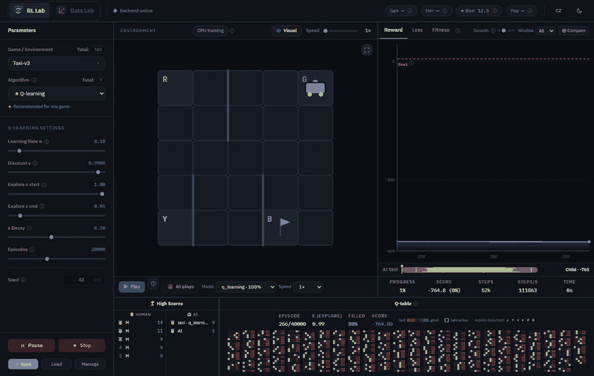
A separate preview rollout streams frames + metrics over WebSocket while the training loop runs full-speed — the reward curve and the agent you're watching never stall each other.
A human joins the loop over WebSocket and is graded on a per-environment, calibrated scale (Child → Superhuman) across 100+ games, with named leaderboards.
Every hyperparameter carries a per-environment recommended value and a bilingual (EN/CZ) explanation, surfaced exactly where you tune it — teaching baked into the schema, not bolted on.
RL Lab trains the agents. The Data Lab tells you, honestly, which run actually won — a research-grade statistics workbench built into the same browser. Not a chart dump: the real method reviewers expect, one click from a publication-ready export.
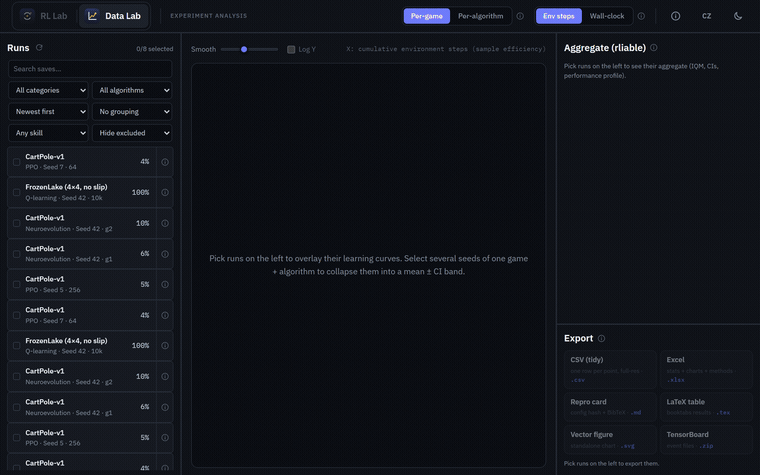
Above: a head-to-head of PPO vs Neuroevolution on CartPole — learning curves overlay, repeated seeds collapse into mean ± CI bands, and the aggregate updates live as each run is added.
A faithful reimplementation of the rliable suite — IQM, mean, median and optimality-gap — the modern standard for reporting RL results without cherry-picking a lucky seed.
Stratified-bootstrap confidence intervals, performance profiles and probability-of-improvement — you see whether one algorithm really beats another, or just got lucky.
Runs sort into a live ranked summary table as you add them — a clean verdict across seeds and environments.
One click to publication-ready figures and tables — straight into a paper, report or slide deck.